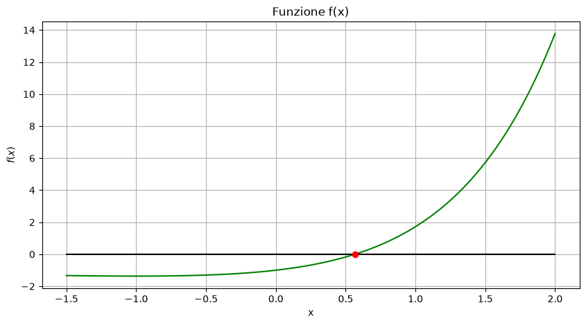
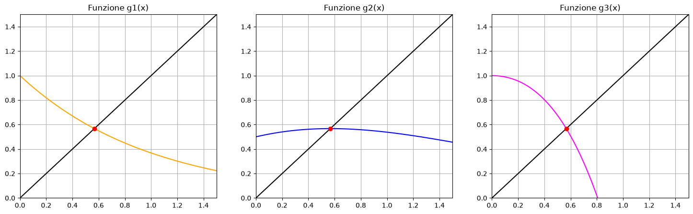
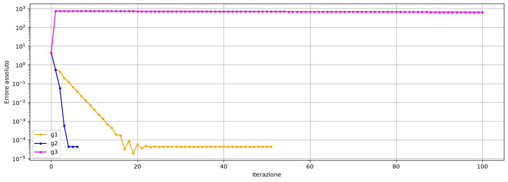

Esercizio 3) Metodo del punto fisso#
Definire la funzione \(f(x)=x e^x - 1\) che ha soluzione in \(x^* = 0.5671\) circa. Considerare le funzioni ausiliarie:
\(g_1(x) = e^{-x}\)
\(g_2(x) = \frac{1+x}{1+e^x}\)
\(g_3(x) = x + 1 -xe^x \)
Poi:
verificare che \(x^*\) approssima uno zero di \(f\) e rappresenta un punto fisso delle funzioni ausiliarie;
plottare \(f\) e le tre funzioni ausiliarie, identificando \(x^*\) in ciascun grafico;
usare l’algoritmo del punto fisso per ciascuna funzione ausiliaria con \(x_0 = 0.5\);
confrontare le soluzioni ottenute e il numero di iterazioni effettuate;
definire le derivate delle tre funzioni ausiliarie e calcolarne il valore in \(x^*\);
confrontare gli errori \(e_k = |x^* - x_k|\) compiuti rispetto a \(x^*\) in ciascun caso: cosa se ne deduce?
stima l’ordine di convergenza \(p\) guardando l’andamento di
import numpy as np
import matplotlib.pyplot as plt
eps = np.finfo(float).eps
Definizione del problema#
def f(x):
return x * np.exp(x) - 1
def g1(x):
return np.exp(-x)
def g2(x):
return (1 + x) / (1 + np.exp(x))
def g3(x):
return x + 1 - x * np.exp(x)
x_star = 0.5671
print(f"f(x_star) = {f(x_star)}")
print(f"g1(x_star) = {g1(x_star)}")
print(f"g2(x_star) = {g2(x_star)}")
print(f"g3(x_star) = {g3(x_star)}")
f(x_star) = -0.0001196168074937276
g1(x_star) = 0.5671678428066697
g2(x_star) = 0.5671432900706718
g3(x_star) = 0.5672196168074937
Visualizzazione#
a = -1.5
b = 2
x = np.linspace(a, b, 200)
y = f(x)
yzeros = np.zeros_like(y)
plt.figure(figsize=(10, 5))
plt.plot(x,y, "-", color = 'green')
plt.plot(x,yzeros, "-", color = 'black')
plt.plot(x_star, f(x_star), "o", color = 'red')
plt.xlabel("x")
plt.ylabel(r"$f(x)$")
plt.title("Funzione f(x)")
plt.grid(True)

a1 = 0
b1 = 1.5
x1 = np.linspace(a1, b1, 200)
y1 = g1(x1)
y2 = g2(x1)
y3 = g3(x1)
yzeros1 = np.zeros_like(y1)
# Visualizzo
plt.figure(figsize=(18, 5))
plt.subplot(1, 3, 1)
plt.plot(x1,y1, "-", color = 'orange')
plt.plot(x1,x1, "-", color = 'black')
plt.plot(x_star, g1(x_star), "o", color = 'red')
plt.xlim([a1, b1]), plt.ylim([a1, b1])
plt.title("Funzione g1(x)")
plt.grid()
plt.subplot(1, 3, 2)
plt.plot(x1,y2, "-", color = 'blue')
plt.plot(x1,x1, "-", color = 'black')
plt.plot(x_star, g2(x_star), "o", color = 'red')
plt.xlim([a1, b1]), plt.ylim([a1, b1])
plt.title("Funzione g2(x)")
plt.grid()
plt.subplot(1, 3, 3)
plt.plot(x1,y3, "-", color = 'magenta')
plt.plot(x1,x1, "-", color = 'black')
plt.plot(x_star, g3(x_star), "o", color = 'red')
plt.title("Funzione g3(x)")
plt.xlim([a1, b1]), plt.ylim([a1, b1])
plt.grid()
plt.show()

Risoluzione#
def punto_fisso(g, x0, tol_x=1e-12, max_iter=100):
x = x0
iterati = [x]
# Controllo del punto iniziale
tol_f = tol_x
if abs(g(x)-x0) <= tol_f:
return x, 0, iterati
for k in range(1, max_iter + 1):
# Nuova approssimazione
x_nuovo = g(x)
iterati.append(x_nuovo)
# Criterio di arresto
if abs(x_nuovo - x) <= tol_x + eps * min(abs(x_nuovo), abs(x)):
print("Raggiunto il criterio di arresto.")
return x_nuovo, k, iterati
x = x_nuovo
print("Raggiunto il numero massimo di iterazioni.")
return x, max_iter, iterati
x0 = 5
x_sol1, n1, iterati1 = punto_fisso(g1, x0)
x_sol2, n2, iterati2 = punto_fisso(g2, x0)
x_sol3, n3, iterati3 = punto_fisso(g3, x0)
print("\nFunz. \t x_sol \t\t Iter. \t f(x_sol)")
print(f"g1 \t {x_sol1:.8f} \t {n1} \t {abs(f(x_sol1)):.3e}")
print(f"g2 \t {x_sol2:.8f} \t {n2} \t {abs(f(x_sol2)):.3e}")
print(f"g3 \t {x_sol3:.8f} \t {n3} \t {abs(f(x_sol3)):.3e}")
Raggiunto il criterio di arresto.
Raggiunto il criterio di arresto.
Raggiunto il numero massimo di iterazioni.
Funz. x_sol Iter. f(x_sol)
g1 0.56714329 51 8.682e-13
g2 0.56714329 6 2.220e-16
g3 -637.06579551 100 1.000e+00
Calcolo derivate#
# TO DO - calcolo derivate
# TO DO - valutazione derivate in x_star
Analisi errori#
print("TABELLA ERRORI ASSOLUTO")
print("k \t errore 1 \t errore 2 \t errore 3")
print("---------------------------------------------------------------")
iters = min(n1, n2, n3)
for k in range(1, iters+1):
errore_1 = np.abs(x_star - iterati1[k-1])
errore_2 = np.abs(x_star - iterati2[k-1])
errore_3 = np.abs(x_star - iterati3[k-1])
print( f"{k} \t {errore_1:.10f} \t {errore_2:.10f} \t {errore_3:.10f} " )
TABELLA ERRORI ASSOLUTO
k errore 1 errore 2 errore 3
---------------------------------------------------------------
1 4.4329000000 4.4329000000 4.4329000000
2 0.5603620530 0.5269428945 736.6328955129
3 0.4261847021 0.0574624688 735.6328955129
4 0.1967418254 0.0005654910 734.6328955129
5 0.1233869714 0.0000432233 733.6328955129
6 0.0657681247 0.0000432904 732.6328955129
errori1 = np.abs(np.array(iterati1) - x_star)
errori2 = np.abs(np.array(iterati2) - x_star)
errori3 = np.abs(np.array(iterati3) - x_star)
plt.figure(figsize=(15, 5))
plt.semilogy(errori1, ".-", color="orange")
plt.semilogy(errori2, ".-", color="blue")
plt.semilogy(errori3, ".-", color="magenta")
plt.xlabel("Iterazione")
plt.ylabel("Errore assoluto")
plt.legend(["g1","g2","g3"])
plt.grid()
plt.show()

for k in range(0, n1-1):
p = np.log(errori1[k+1]) / np.log(errori1[k])
print(f"k={k} \t p={p}")
k=0 p=-0.3889531084474259
k=1 p=1.4725887772446447
k=2 p=1.9063153822427552
k=3 p=1.2869656479199216
k=4 p=1.3006983777020045
k=5 p=1.1955738323532528
k=6 p=1.18117094956485
k=7 p=1.1433261908048649
k=8 p=1.132686996688784
k=9 p=1.109798672395301
k=10 p=1.1085459289090789
k=11 p=1.0837607648916916
k=12 p=1.099969886355534
k=13 p=1.0553197594777215
k=14 p=1.1136397733045653
k=15 p=1.0087013381938739
k=16 p=1.199253534350112
k=17 p=0.9025999974523722
k=18 p=1.158558942788087
k=19 p=0.9007118043672386
k=20 p=1.0479301683706466
k=21 p=0.9715062815692165
k=22 p=1.015573150471103
k=23 p=0.9910138304750651
k=24 p=1.005041201027681
k=25 p=0.9971242453963415
k=26 p=1.0016254083954004
k=27 p=0.9990764092961649
k=28 p=1.0005232384741085
k=29 p=0.9997030667280371
k=30 p=1.0001683449287742
k=31 p=0.9999045054347294
k=32 p=1.0000541530258917
k=33 p=0.9999692855214919
k=34 p=1.000017418881904
k=35 p=0.9999901207960096
k=36 p=1.000005602859208
k=37 p=0.9999968223551677
k=38 p=1.0000018021731183
k=39 p=0.9999989779074879
k=40 p=1.000000579672162
k=41 p=0.9999996712426923
k=42 p=1.0000001864522945
k=43 p=0.9999998942548344
k=44 p=1.000000059972596
k=45 p=0.9999999659870838
k=46 p=1.0000000192901335
k=47 p=0.9999999890596928
k=48 p=1.0000000062047483
k=49 p=0.9999999964809384